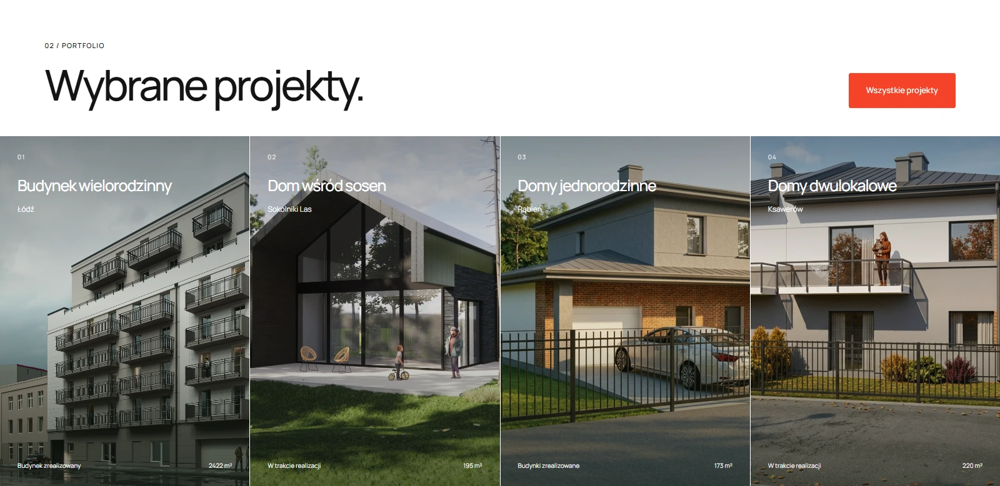
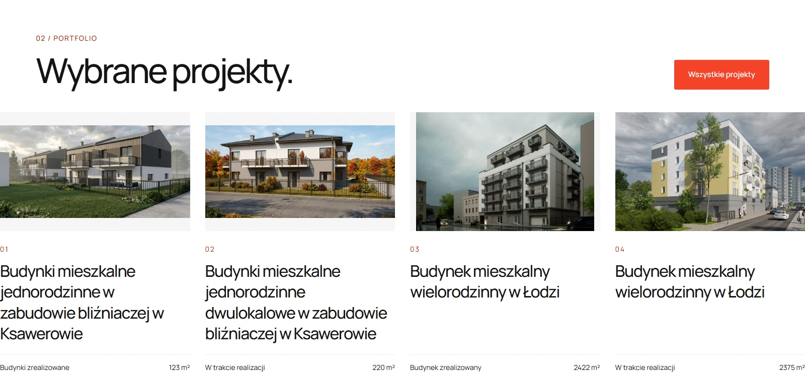

Wybrane projekty — wcześniejsze wersje.
Zrzuty sekcji odtworzone z historii repozytorium. Kliknij obraz, aby otworzyć go w pełnym rozmiarze.
1. Pierwotny układ
Cztery wysokie panele, nazwy projektów na zdjęciach.

2. Wersja pośrednia
Cztery zdjęcia w jednym rzędzie, podpisy pod zdjęciami.
